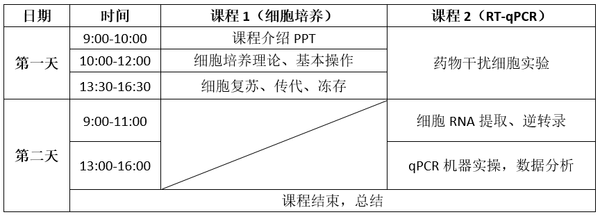
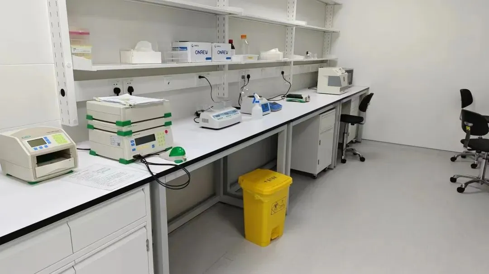
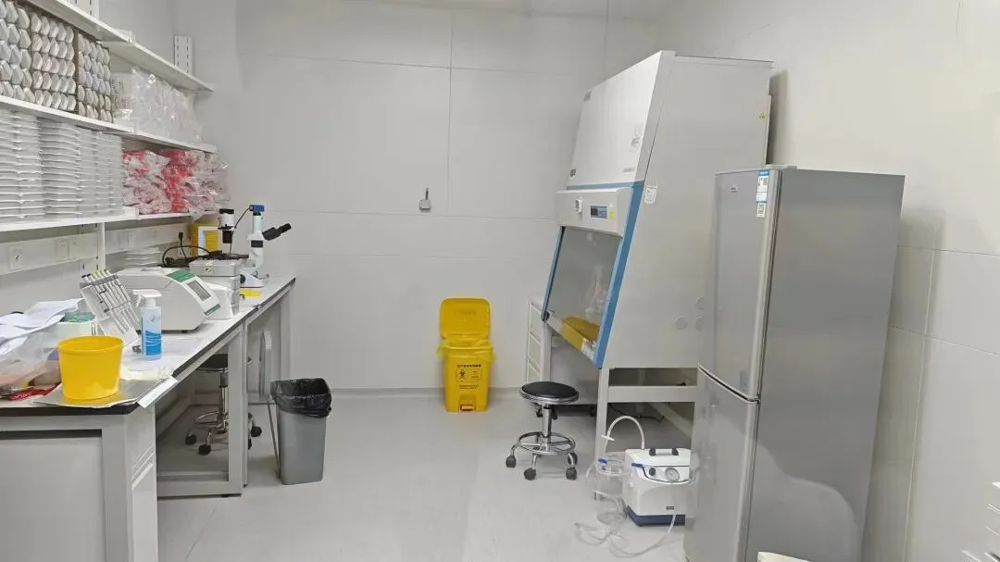
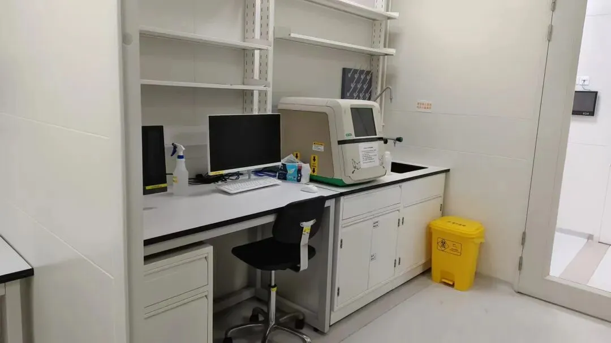
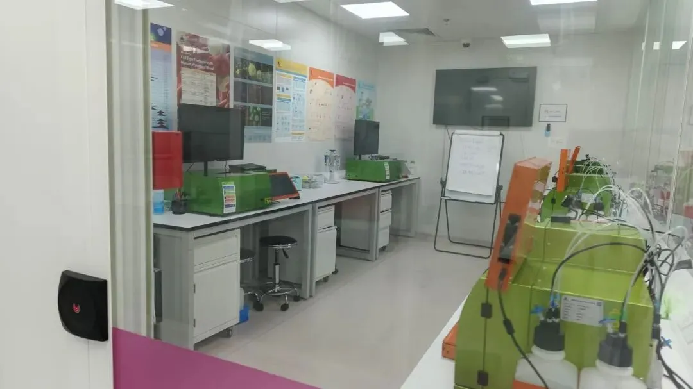

实验培训新增一个名额（细胞培养+RT-QPCR实操）
原文：https://mp.weixin.qq.com/s?__biz=MzAwMzIzOTk5OQ==&mid=2247522889&idx=2&sn=41fc58e0c25ca1f1782464468c0f6be6&chksm=9b3ce319ac4b6a0f53c45939b492842c3832d122c0157908af1d415aeb507895260c2781ba69#rd 合集：实验基地

实验基地第二次线下培训


Biomamba实验基地此前已经落地：实验基地的序章，空着也是空着，给大家提供一个为期两天的线下小班 教学吧，由浙大博士 手把手教学。教程完全免费 ~现新增一个名额。内容很基础，大神请把机会让给有需要的同学哦。请联系文末客服微信报名。 课程暂定2024年11.23-11.24 期间举行，日程安排如下

注：本次教程免费 ！！交通、食宿等请大家自理哦~

实验基地
长期以来Biomamba都在自己的媒体矩阵中分享生信分析技能。生命科学毕竟是物质的科学，脱离了实验 总是玩不转的，大家的分析结果也需要去实验验证。一方面自己想在不同的领域里开疆扩土，追寻些新的可能；另一方面也想为大家的科研生涯全方面保驾护航，未来给大家提供新的服务、交流交流实验技能。所以，Biomamba联合浙江大学博士团队 组建了一个自己的实验室(Biomamba生信基地终于有基地 啦！)，base上海张江。目前还是百业待兴，大家有什么想法可以填写问卷 跟咱反馈反馈：问卷链接，文末阅读原文可直达：https://www.wjx.cn/vm/tpYsP8D.aspx# 问卷二维码：

更多想法也可以直接添加我们的客服微信[Biomamba_yunying]聊聊，我们也有专门的实验基地交流群。 实验室环境：




对外开放~
诚然，公益培训也不是长久之计。目前实验室的固定开支 大概在四位数/天(不包含人员开支)，在为大家解决困难的同时，我们也需要考虑到存续 的问题。此前的实验培训中，有同学希望把自己课题组实验放在Biomamba实验基地中完成，由我们的老师指导或协助完成过程。我们当然愿意伸出援手。为保证实验质量，我们将限制实验项目/进驻人员的数量。以下是目前实验室可以进行实验列表。需要说明的是，实验室只协助完成合规实验 ，并客观呈现结果(真实验、真科研)且没有论文工厂类的服务！一定要获得阳性结果的同学请不要浪费彼此的时间！
| 项目 | 价格(详细数字添加下方微信商议) |
|---|---|
| 基因敲低验证 | 1xxxx |
| 基因过表达 | 8xxx |
| CCK8细胞增殖实验 | 1xxx |
| 细胞划痕实验 | 1xxx |
| 细胞周期 | 2xxx |
| 细胞凋亡 | 2xxx |
| 细胞侵袭 | 2xxx |
| 细胞迁移 | 1xxx |
| 单克隆形成实验 | 8xx |
| CO-IP | 3xxx |
| 核/质 WB | 8xx |
| WB | 6xx |
| RT-qPCR | 1xx |
| 免疫荧光染色 | 1xxx |
| 串联亲和纯化 | 5xxx |
| 其他分子细胞实验 | 另议 |
详情可咨询文末微信

如何联系我们

 公众号后台消息回复不便，这里给大家留一下领取资料及免费服务器(足够支持你完成硕博生涯的生信环境)的微信号 ，方便各位随时交流、提建议（别问在么，添加时直接说来意）。此外呼声一直很高的交流群 也建好了，欢迎大家入群讨论：
公众号后台消息回复不便，这里给大家留一下领取资料及免费服务器(足够支持你完成硕博生涯的生信环境)的微信号 ，方便各位随时交流、提建议（别问在么，添加时直接说来意）。此外呼声一直很高的交流群 也建好了，欢迎大家入群讨论：
大家可以阅读完这几篇之后添加给生信入门初学者的小贴士 如何搜索公众号过往发布内容

 您点的每个赞和在看，我都认真当成了喜欢
您点的每个赞和在看，我都认真当成了喜欢